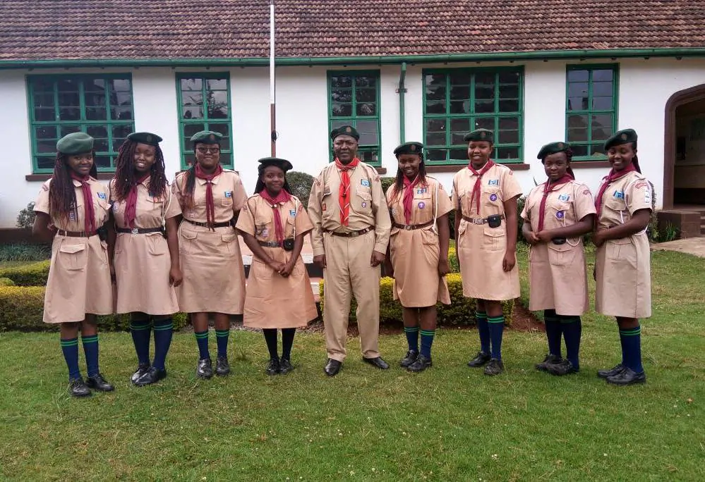

KENYA SCOUT ASSOCIATION PROGRESS
subscribe Easy BenKaka@ Youtube channel to watch more videos on Web Designing, Digital Marketing and Graphics Designing.Below are my links for my recent projects
KENYA SCOUT ASSOCIATION PROGRESS
subscribe Easy BenKaka@ Youtube channel to watch more videos on Web Designing, Digital Marketing and Graphics Designing.BENARD AKAKA is a KENYAN man and model, best known for his work in BEN.com web Developer. In addition to predominantly working in Tamil movies, he has also appeared in Tanzania and Hindi films. She has won an Ananda Vikatan Cinema Award, a SIIMA Award and a U.S.A Film Festival award. Wikipedia